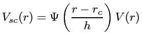
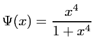

Analytic pair potentials can be enabled in potfit by compiling it with the apot switch. There are some additional options for analytic potentials like the chemical potentials or the smooth cutoff.
potfit supports global parameters, which can occur in different potentials. With this feature it is possible for any potential to "share" parameters with each other.
To use them, you need a section called "global n" after the header in your potential file, where n is the number of global parameters. The format for the parameters is the same as for normal parameters: name value min max.
If you want to use a global parameter in a potential, use the name of the global parameter and add an exclamation mark.
#F 0 3 #C Mg Zn #I 0 0 0 #E global 2 glob1 1 0 2 glob2 2 0 5 type lj cutoff 8 glob1! glob2! type lj cutoff 8 glob2! glob1!
The smooth cutoff function is very important for analytic potentials since it ensures that the
potential and its gradient vanish at the desired cutoff radius.
Therefor the potential is replaced by a cutoff function Ψ at a certain range.
 where 
To enable the smooth cutoff for a potential, _sc has to be added to the potential identifier.
type lj_sc cutoff 7 epsilon 0.1 0 1 sigma 2.5 1 4 h 1 0 2
Potentials fitted with the _sc option will have an additional parameter h at the end. If you omit it, it will be kept fix at a value of 1.
The currently implemented analytic potential functions can be found here.
If you want to add other analyic potentials see this guide.